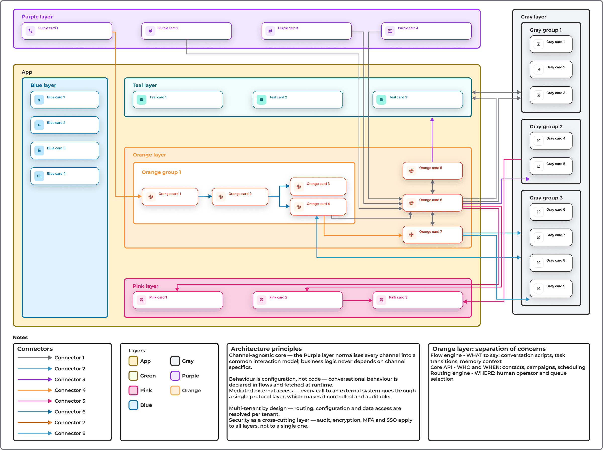
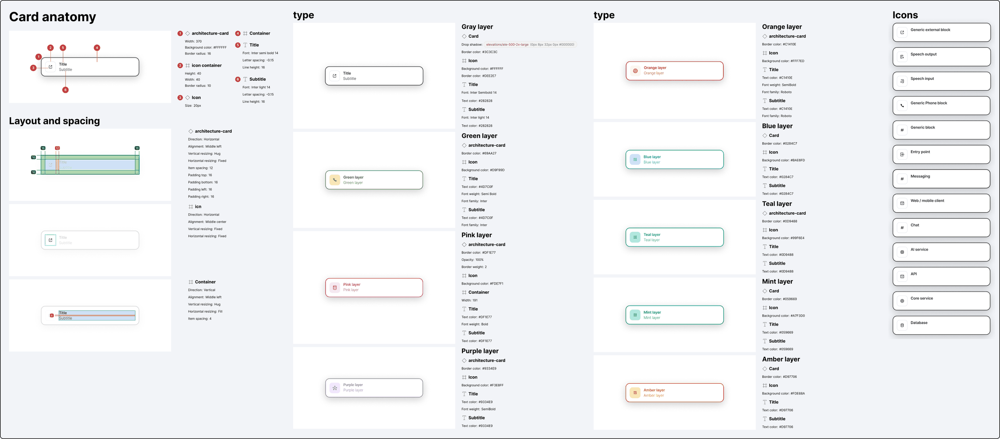
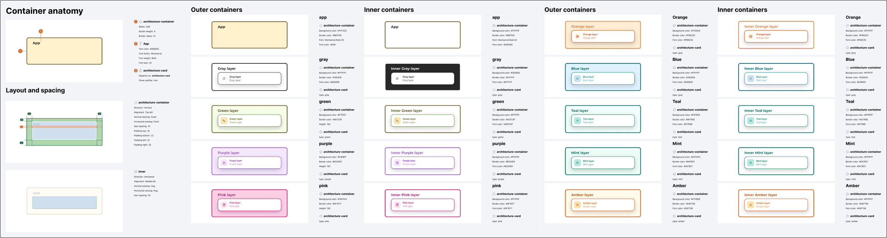
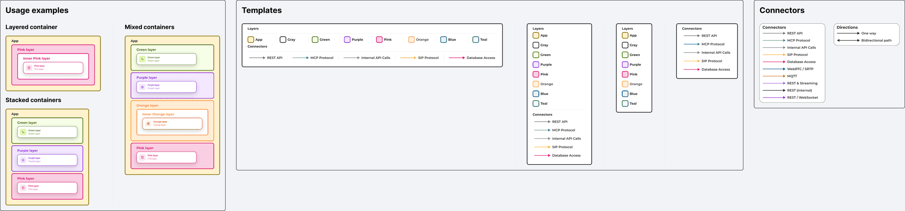
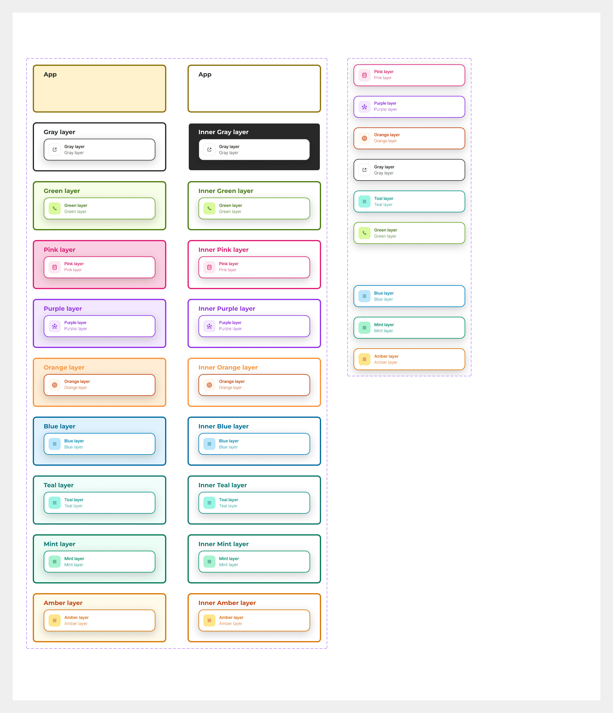
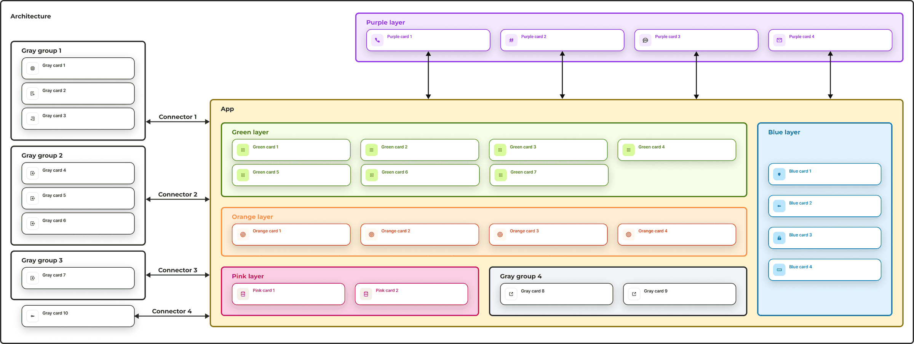

The problem
Architecture diagrams are some of the most-read pages in technical documentation, and they were the least consistent. Each one had been drawn by whoever needed it at the time, in whatever tool was open. Boxes changed shape and colour from one diagram to the next, the same service looked different on two pages, and nothing told you whether an arrow meant an API call, a database access or a media stream.
The result: a reader had to relearn the visual language every time they opened a diagram. And when the architecture changed, nobody could update the drawings quickly, so they drifted out of date.
What I set out to do
Treat the diagrams like any other piece of documentation: give them a style guide and a set of reusable parts, so that anyone could draw a new one that looked like it belonged with the others — and could update an existing one in minutes.
I built it as a small Figma library with three kinds of components: cards, containers and connectors, plus the templates that go around them.
The card
The card is the smallest unit — one service, one module, one external system. It has a fixed anatomy: an icon in a 40 × 40 container, a title in Inter Semi Bold, an optional subtitle in Inter Light, 16px padding, 12px corner radius. The text is deliberately small so that a diagram with twenty cards still fits on a page.
Every card comes in one of nine colour variants, one per layer of the architecture. In the real system the colours map to roles — the channels that bring traffic in, the business logic, the data stores, the cross-cutting security layer, the external services. Here they are just labelled by colour, but the point is the same: the moment you see a pink card you know what kind of thing it is, before you read it.

The container
Containers group cards into layers. Each has a title in Montserrat Bold, a 4px border in the layer colour and a tinted background, so that even a large diagram reads as a handful of coloured bands before you get into the detail.
Two details took the most iteration. First, an Inner variant with a white background, for when a container sits inside another one — nested tinted backgrounds got muddy fast. Second, a spacer card with no visible content, which keeps rows aligned when one layer has fewer items than the one above it.

Connectors and legends
Arrows carry meaning too, so they got the same treatment. Each kind of connection has its own colour and stroke — eight in total, plus a one-way and a two-way arrowhead. Every diagram ships with a legend block that lists the connector styles and the layer colours actually used, so no diagram depends on the reader remembering the rules.
The usage examples in the library show the three layouts that cover almost every case: a single layer with nested groups, several layers stacked, and mixed layers side by side.

The components in Figma
Everything is built as variants of two component sets — a card set with a type property for the colour and a toggle for the subtitle, and a container set with the same type property plus the Inner switch. Swapping a card from one layer to another is one dropdown, and the icon, text colours and background follow.

Two diagrams, one language
The library ships with two example diagrams drawn entirely from these parts. The high-level one is the overview you would put at the top of a product page: layers, the main modules in each, and the external systems they talk to. The detailed one zooms into a single flow and shows how groups nest inside layers and how the connector colours tell different kinds of traffic apart.
Put side by side, they are clearly the same system at two zoom levels — which is exactly what the earlier diagrams were not.

What changed
New diagrams now take a fraction of the time, because the thinking about shapes, colours and type has already been done. They are consistent with each other, so a reader who learns the language once can read all of them. And because they are made of components, updating the architecture means editing a diagram, not redrawing it.
The part I am most pleased with is the one nobody notices: the diagrams stopped being a thing people avoided making.